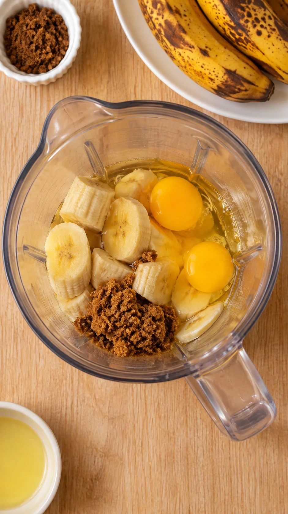
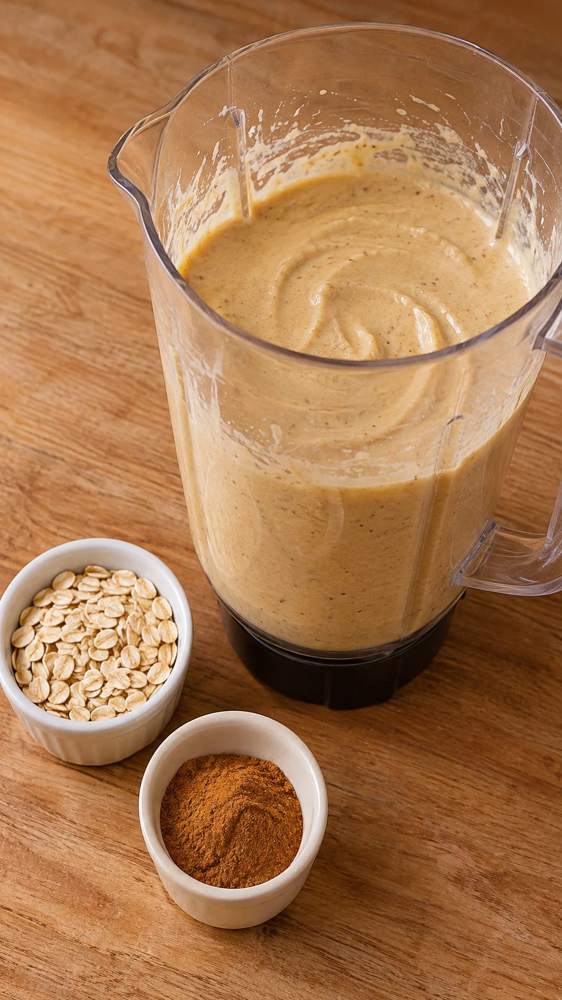
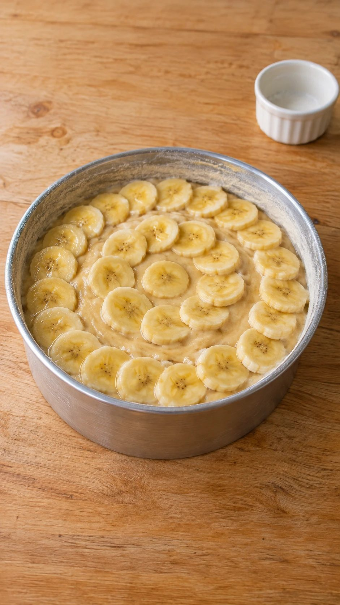
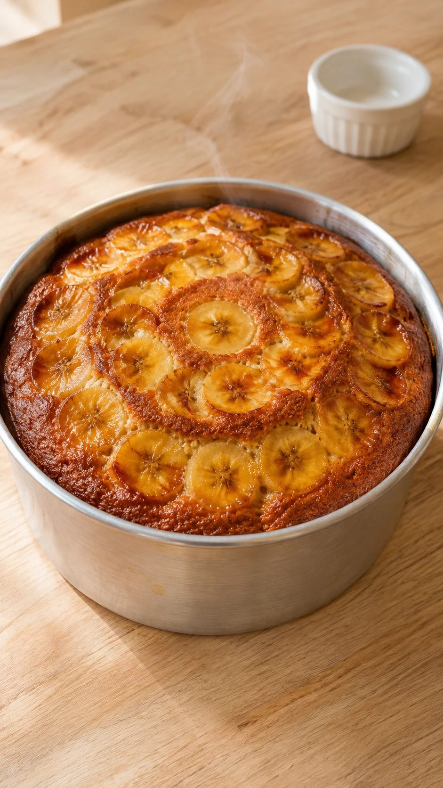

Bolo de banana de liquidificador com aveia, sem farinha de trigo: úmido, cheiroso e pronto em 45 minutos. Um jeito gostoso de aproveitar as bananas que passaram do ponto.
10 fatias · forma de 20 cm · toque para marcar o que já separou
Sobre a receita
Sabe aquelas bananas que ficaram pintadinhas na fruteira? Elas são as melhores para bolo: quanto mais maduras, mais doce e úmida fica a massa. Esta receita vai toda no liquidificador, leva aveia no lugar da farinha de trigo e fica pronta em 45 minutos. Combina com café da manhã, lanche da tarde e lancheira.
Modo de preparo
Preaqueça o forno a 180 °C e unte uma forma de 20 cm.
No liquidificador, bata as bananas, os ovos, o óleo e o açúcar por 1 minuto.
Junte a aveia e a canela e bata até ficar homogêneo.
Acrescente o fermento e pulse só 3 vezes.
Despeje na forma e asse por 35 a 40 minutos, até o palito sair limpo.
Passo a passo em fotos

1. Bananas, ovos, óleo e açúcar no liquidificador

2. Junte a aveia e a canela e bata

3. Massa na forma com rodelas de banana

4. 35 a 40 minutos a 180 °C
Dica:Corte rodelas de banana e coloque por cima antes de assar: fica lindo e caramelizado.
Publicada em 10 de novembro de 2026 · Tempo total: 45 min · Imagem ilustrativa criada com IA.